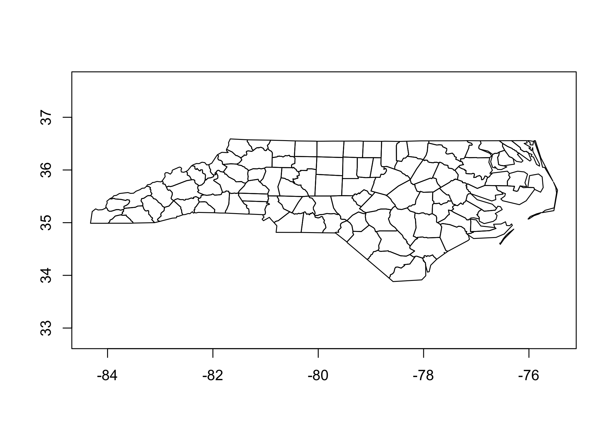

The goal of geovctrs is to provide a common set of classes and data structures to ensure that processing functions in the rapidly expanding R geospatial ecosystem are interchangeable.
Installation
You can install the development version from GitHub with:
# install.packages("remotes") remotes::install_github("paleolimbot/geovctrs")
You’ll have to install GEOS to build this package yourself. There will come a day when this package won’t require GEOS, but in the words of Aragorn, that day is not this day. On Windows this is taken care of through rwinlib, on MacOS you can install homebrew and run brew install geos, and on Linux you can install GEOS from your favourite package manager (apt-get install libgeos-dev on Debian/Ubuntu).
If you can load the package, you’re good to go!
library(geovctrs)
Geometry vectors
This package provides vctrs class definitions for well-known binary (geo_wkb()), well-known text (geo_wkt()), and several simple geometries that can be efficiently stored using column vectors (geo_xy(), geo_segment(), and geo_rect()). These classes are designed to work with dplyr, tidyr, and other tidyverse packages that use vctrs. In addition to providing default implementations of generics, they have print, plot, and coercion, methods so that they “just work”:
head(geo_example_wkt) #> <geovctrs_wkt[6]> #> [1] NA_wkt_ #> [2] POINT (30 10) #> [3] POINT EMPTY #> [4] POINT Z (1 1 5) #> [5] MULTIPOINT (10 40, 40 30, 20 20, 30 10) #> [6] MULTIPOINT EMPTY head(as_geo_wkb(geo_example_wkt)) #> <geovctrs_wkb[6]> #> [1] NA_wkb_ POINT (30 10) #> [3] POINT EMPTY POINT Z (1 1 5) #> [5] MULTIPOINT[4] (10 40)…+3 MULTIPOINT EMPTY
Constructing and destructing geometries
The geovctrs package provides functions to construct geometries from coordinates, and destruct geometries to extract their coordinates.
# construct linestrings linestrings <- c( geo_linestring(geo_xy(c(1, 2, 5), c(0, 1, 2))), geo_linestring(geo_xy(c(10, 20, 50), c(0, 10, 20))) ) linestrings #> <geovctrs_collection[2]> #> [1] LINESTRING (1 0)…+2 LINESTRING (10 0)…+2 # destruct to get coordinates geo_coordinates(linestrings) #> # A tibble: 6 x 2 #> feature xy #> <int> <xy> #> 1 1 · (1 0) #> 2 1 · (2 1) #> 3 1 · (5 2) #> 4 2 · (10 0) #> 5 2 · (20 10) #> 6 2 · (50 20)
You can use separate_xy() get the actual x and y values (and unite_xy() to create a geo_xy() column).
separate_xy(geo_coordinates(linestrings), "xy") #> # A tibble: 6 x 3 #> feature x y #> <int> <dbl> <dbl> #> 1 1 1 0 #> 2 1 2 1 #> 3 1 5 2 #> 4 2 10 0 #> 5 2 20 10 #> 6 2 50 20
In the upcoming release of dplyr, this is useful in conjunction with group_by() and summarise().
library(dplyr) geo_coordinates(linestrings) %>% group_by(feature) %>% summarise(geometry = geo_linestring(xy)) #> # A tibble: 2 x 2 #> feature geometry #> * <int> <clctn> #> 1 1 / (1 0)…+2 #> 2 2 / (10 0)…+2
Generics
There are several concepts that show up on repeat in geometry packages. The geovctrs package provides these as generics with reasonable implementations for the bundled geometry vector classes. Notably, geo_bbox() (returns a geo_rect()), geo_plot() (thin wrapper around graphics::plot()), and geo_summary() (returns a tibble() with basic information about each feature). These generics work on anything that can be interpreted as a geometry vector, including character vectors (interpreted as well-known text), data frames with exactly one geometry column (interpreted as the geometry column), and anything that implements as_geovctr() (e.g., sf objects).
geo_bbox(geo_nc) #> <geovctrs_rect[1]> #> [1] (-84.32385 33.88199↗-75.45698 36.58965) geo_plot(geo_nc)

geo_summary(geo_nc) #> # A tibble: 100 x 10 #> is_empty geometry_type n_geometries n_coordinates srid coordinate_dime… #> <lgl> <chr> <int> <int> <int> <int> #> 1 FALSE multipolygon 1 27 4267 2 #> 2 FALSE multipolygon 1 26 4267 2 #> 3 FALSE multipolygon 1 28 4267 2 #> 4 FALSE multipolygon 3 38 4267 2 #> 5 FALSE multipolygon 1 34 4267 2 #> 6 FALSE multipolygon 1 22 4267 2 #> 7 FALSE multipolygon 1 24 4267 2 #> 8 FALSE multipolygon 1 17 4267 2 #> 9 FALSE multipolygon 1 14 4267 2 #> 10 FALSE multipolygon 1 6 4267 2 #> # … with 90 more rows, and 4 more variables: has_z <lgl>, #> # first_coordinate <xy>, problems <chr>, is_missing <lgl>
The geovctrs package also provides a framework for transformers, or functions that accept a vector of geometries and return a vector of geometries. These always return the same type as the input, as dictated by the implementations of as_geovctr() and restore_geovctr(). This enables transforming functions to work on a wide variety of input types, including sf objects:
library(sf) #> Linking to GEOS 3.7.2, GDAL 2.4.2, PROJ 5.2.0 sf_nc <- read_sf(system.file("shape/nc.shp", package = "sf")) geo_envelope(sf_nc) #> Simple feature collection with 100 features and 14 fields #> geometry type: POLYGON #> dimension: XY #> bbox: xmin: -84.32385 ymin: 33.88199 xmax: -75.45698 ymax: 36.58965 #> epsg (SRID): 4267 #> proj4string: +proj=longlat +datum=NAD27 +no_defs #> # A tibble: 100 x 15 #> AREA PERIMETER CNTY_ CNTY_ID NAME FIPS FIPSNO CRESS_ID BIR74 SID74 #> <dbl> <dbl> <dbl> <dbl> <chr> <chr> <dbl> <int> <dbl> <dbl> #> 1 0.114 1.44 1825 1825 Ashe 37009 37009 5 1091 1 #> 2 0.061 1.23 1827 1827 Alle… 37005 37005 3 487 0 #> 3 0.143 1.63 1828 1828 Surry 37171 37171 86 3188 5 #> 4 0.07 2.97 1831 1831 Curr… 37053 37053 27 508 1 #> 5 0.153 2.21 1832 1832 Nort… 37131 37131 66 1421 9 #> 6 0.097 1.67 1833 1833 Hert… 37091 37091 46 1452 7 #> 7 0.062 1.55 1834 1834 Camd… 37029 37029 15 286 0 #> 8 0.091 1.28 1835 1835 Gates 37073 37073 37 420 0 #> 9 0.118 1.42 1836 1836 Warr… 37185 37185 93 968 4 #> 10 0.124 1.43 1837 1837 Stok… 37169 37169 85 1612 1 #> # … with 90 more rows, and 5 more variables: NWBIR74 <dbl>, BIR79 <dbl>, #> # SID79 <dbl>, NWBIR79 <dbl>, geometry <POLYGON [°]>
See vignette("extending-geovctrs", package = "geovctrs") for instructions on how to create a class that works with the geovctrs framework.